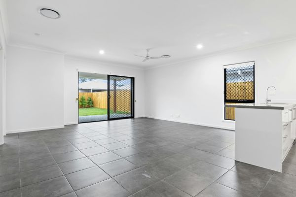
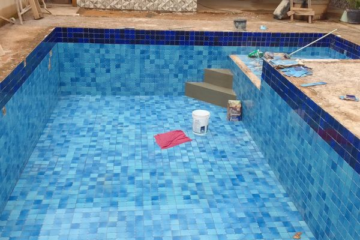
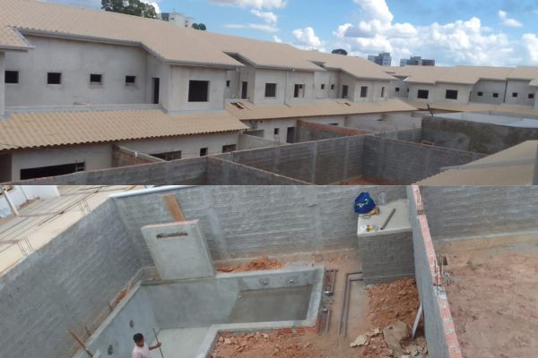

Nossos Projetos
Confira algumas das nossas obras e reformas realizadas com excelência.

Transformação completa de um espaço residencial! Reforma de interiores com piso de cerâmica, pintura nova e instalação de luminárias modernas para um ambiente sofisticado e aconchegante.

Execução de pavimentação com blocos de concreto, garantindo um espaço externo durável, seguro e visualmente atraente para circulação.

Construção de uma piscina elegante com revestimento de azulejos azuis, perfeita para momentos de lazer e relaxamento.

Obra residencial em fase inicial, com estrutura reforçada para garantir segurança e durabilidade. Planejamento estratégico para otimizar cada detalhe da construção.